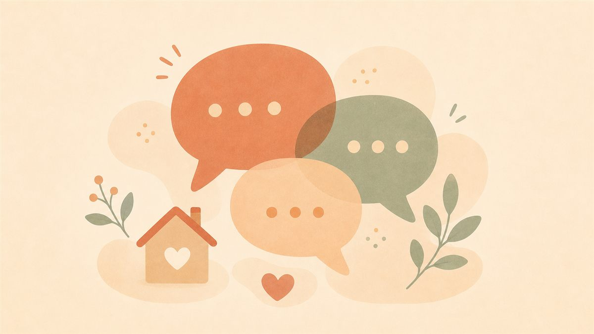

発達っ子ママキャリアデザイン室 主催 ／ 対話イベント
発達障害の子どもと家族のための対話イベント
知ることから、はじめよう。
発達障害当事者の声から、子どもの気持ちと関わり方を考える時間。

「もっと頑張らなきゃ」と、自分を追い詰めていませんか。子どもの気持ちも、親の想いも、先生や支援者の立場も。それぞれに見えているものは少しずつ違います。まずは知ることから、一緒に考えてみませんか。
子どもの立場
親の立場
先生・支援者の立場
当日の流れ
13:00〜
第1部 当事者が語る「私に見えていた世界」
発達障害当事者の方に、子どもの頃の体験や感じていたことをお話しいただきます。"頑張りすぎなくていい"と思えた瞬間も。
対話・質疑
感じたことを、参加者同士で
お話を聞いて感じたことを共有しながら、それぞれの立場について考える時間です。
〜14:30
第2部 サポートブック活用ミニワークショップ
家庭・学校・支援者で共有するためのツール「サポートブック」をご紹介し、簡単なワークを行います。
開催概要
- 日時
- 2026年9月27日（日）13:00〜14:30（受付12:30〜）
- 会場
- ふるさと新座館 会議室
- 対象
- 発達障がい、もしくは疑いのあるお子さんの保護者の方／関心のある方／学校・園関係者／療育等施設関係者
- 定員
- 30名程度（先着順）
- 参加費
- 1,000円（お茶・お菓子代を含む）／ 当日、現金またはPayPayでお支払い
お子様連れ歓迎です。ただし保育等はありませんので、お子様とご一緒にご参加ください。
参加を申し込む
QRコードを読み取り、Googleフォームよりお申し込みください。